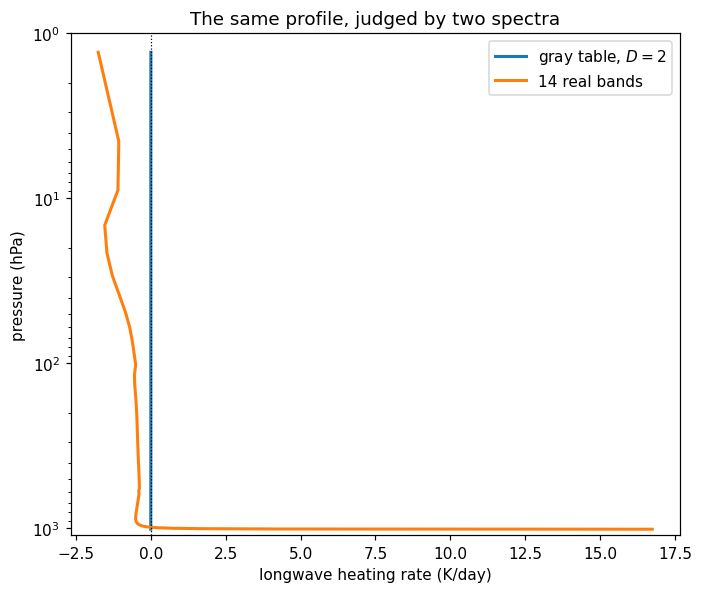

Gray equilibrium, tested
Chapter 8 solves the gray atmosphere in radiative equilibrium and gets a closed form:
\[T(\tau) = T_e \left[\frac{1 + \tau_\infty - \tau}{2}\right]^{1/4}, \qquad T_g = T_e\left(1 + \frac{\tau_\infty}{2}\right)^{1/4}\]
with a skin temperature \(2^{-1/4} T_e\) at the top and a discontinuity between the ground and the air touching it. Then the chapter ends, because there is nothing more you can do to an analytic solution with a pen.
There is something you can do to it with a radiation code. Two things, in fact. You can check it — feed the profile to a solver that knows nothing about the derivation and see whether it agrees the profile is in equilibrium. And once it agrees, you can take the same profile to a solver that uses real spectroscopy and watch it fall apart.
Both are on this page, in that order. The first is the more satisfying; the second is the one that explains why every other page in this tour is non-grey.
The τ in chapter 8 is the diffusivity-scaled optical depth. Page 2 showed where the factor comes from: a two-stream solver replaces the angular integral with a single effective slant path, exp(−D τ), and the notes derive chapter 8 with D = 2 (that is, μ = 1/2). Cork defaults to the Elsasser value D = 1.66, which is the better approximation to the real integral and the wrong one for reproducing this particular algebra.
So τ_∞ = 4 in the formula above is not the column optical depth the model computes. It is D times that. To make the notes’ equations exact, this page
- constructs the component with
diffusivity_factor=2.0, and - uses a table,
tour_gray_lw, whose absorption coefficient was calibrated so that2 × Σ_layers τ_k = 4on climt’s default 60-level grid.
Both, together. Match only one and the heating rate will not vanish, and it will not vanish for a reason that has nothing whatever to do with the physics you are trying to test — which is the worst kind of disagreement, because it looks like a result.
Prescribing the analytic solution
Nothing is integrated here. analytic_gray_equilibrium in _tour/soundings.py evaluates chapter 8’s formula on climt’s pressure grid, taking optical depth linear in pressure — the well-mixed absorber the derivation assumes — so τ* = τ_∞ p/p_s, measured down from space.
The top level reads 214.70 K against an analytic skin temperature of 214.43 K. The 0.27 K is not an error in the solution; it is that the topmost model layer is centred at 1.3 hPa, where τ* is 0.005 rather than 0, so the profile has not quite reached its own limit. Chapter 8’s skin temperature is the value at τ* = 0 exactly, and no grid with a finite top ever gets there.
The discontinuity is a prediction, not a defect
The ground comes out at 335.6 K and the air in contact with it at 320.6 K. Fifteen kelvin, across nothing.
This is real, in the sense that it is what pure radiative equilibrium demands. The ground has to emit σT_g⁴ upward and can only lose energy that way, while the bottom layer of air both emits and absorbs and settles at a temperature set by the radiation passing through it. Nothing in the radiative problem couples them by contact, so nothing stops them from disagreeing.
What it is not is a state any planet is ever found in. A 15 K jump across a molecular boundary layer is violently unstable: the air in contact with the ground would rise, immediately. So this figure is the derivation telling you the honest truth about its own domain of validity — pure radiative equilibrium is not achievable near a solid surface, and something else, convection, has to take over there. Chapter 8 says as much in words. Here it is as a number you can vary.
Asking the model
Now the check. lw(state) runs the same correlated-k solver the rest of this tour uses — one band, constant absorption, D = 2, and no knowledge at all of where the temperature profile came from.
The maximum heating rate anywhere in the column is 0.002 K/day. At that rate the fastest-drifting layer needs a year and a half to move by one kelvin — hold that number, because the same layer under a real spectrum, later on this page, manages a kelvin in an hour and a half. The OLR is 239.85 W m⁻² against the required σT_e⁴ = 239.76 — 0.04% high, which is the same finite-grid effect as the skin temperature.
That is a genuine validation, and it runs in both directions.
It validates the derivation, because a solver with an entirely different internal structure — layer-by-layer upward and downward sweeps over a discretised column, no closed form anywhere in it — agrees that this profile is the one that does not evolve. Chapter 8’s algebra is not a plausible-looking simplification. It is the exact equilibrium of the equations the model is solving.
And it validates the model, which is the direction people forget. A radiation code is thousands of lines with a great many places to be subtly wrong, and almost nothing you can compare it against has an exact answer. This is one of the few cases that does, which is why gray-limit tests like this one are a standard part of a radiation scheme’s test suite — climt has them in tests/test_grey_limit.py. When you write your own component, find an analytic corner and pin it there.
Then take it to a real spectrum
The profile is a perfect equilibrium for a gray atmosphere. Keep the profile exactly as it is, keep the surface temperature, and hand it to the fourteen-band Earth table instead — the one pages 1 through 3 used. The atmosphere is kept dry (q = 10⁻⁶), because the gray table had no water vapour to speak of and the comparison should change one thing at a time: the spectrum.

This is the figure the cell above produces. Live cells need WebAssembly; if your browser blocks it, the static version is here.
What the second spectrum says
The blue line is on zero to within the width of the ink. The orange one is not anywhere.
The rms heating rate goes from 0.0012 K/day to 2.33 K/day — a factor of two thousand. Fifty-five of the sixty layers are cooling, most of them at 0.4 to 0.5 K/day through the troposphere and accelerating to 1.8 K/day at the model lid. The bottom layer does the opposite and heats at 16.7 K/day, because a 335.6 K ground is radiating into air that, in the window region, is nearly transparent and very cold; the bottom layer absorbs what little it can of that flux and has almost no way to get rid of it. And the OLR is not 240 W m⁻² but 600 W m⁻²: with real band structure and no water vapour, this atmosphere is nothing like opaque enough to hold in a 335 K surface.
None of that is a small correction. The gray model did not get the equilibrium slightly wrong; it produced a profile that a real spectrum does not recognise as an equilibrium at all, and would move away from immediately in every layer.
This is worth being precise about, because it is easy to over-read. Chapter 8 is not wrong. Everything above this section stands: the algebra is exact, the solver confirms it, the skin temperature and the discontinuity are real features of gray radiative equilibrium. The problem is the word “gray”. One absorption coefficient for all wavelengths is an assumption about the atmosphere, and pages 1 through 3 measured how badly it fails — the brightness temperature swings 85 K across the spectrum, the optical depth spans five orders of magnitude, and the radiating level ranges from 3 hPa to the ground.
Everything chapter 8 concludes downstream of that assumption inherits the error: the surface temperature, the lapse rate, the sensitivity to τ_∞. You can tune τ_∞ until the gray model reproduces Earth’s 288 K, and people do, but you have then fitted one number to one observation and learned nothing you can extrapolate with. Change the CO₂ and the gray model has no way to know which part of the spectrum you changed — which is exactly what page 5 measures.
lw(state) returned a pair, and this page used both halves:
The split is the central design decision in sympl, and it is about time.
Tendencies are rates of change: ∂T/∂t in K s⁻¹, which is why every heating rate on this page is multiplied by 86400 to read in K/day. A tendency is not a property of the state — it is a statement about where the state would go next. It belongs to the component, and two components handed the same state return two different tendencies, which is precisely how you couple them: add the tendencies.
Diagnostics are quantities computed from the current state that were not already in it: fluxes, optical depths, transmittances. They are properties of the state at this instant. Ask two components for the same diagnostic and, if both are correct, they should agree.
One entry in that list looks like it is on the wrong side: air_temperature_tendency_from_longwave is a diagnostic, and it holds the same numbers as the air_temperature tendency. Both are there on purpose. The tendency is the component’s contribution to be summed with every other component’s; the diagnostic is a labelled copy that survives into the state so you can plot the longwave heating separately after the shortwave and the convection have added theirs. Sum the diagnostics by mistake and you will double-count the radiation.
A component that returns tendencies is a TendencyComponent; one that returns an updated state directly is a Stepper. Only a Stepper — or a time integrator such as sympl.AdamsBashforth wrapped around your tendency components — advances anything.
Nothing in this tour ever does. Every number on these six pages is an instantaneous rate evaluated on a profile we wrote down by hand. When this page says the analytic profile “is an equilibrium”, the evidence is that the tendency is zero, not that anything was stepped until it stopped moving. That is a stronger statement and a much cheaper one: the equilibrium test is a single call, while integrating a non-grey column to equilibrium takes a couple of thousand steps. The live RCE demo does it the other way, if you want to watch.
Every page in this tour opens with the same line, and it has been unexplained since page 1:
sympl.set_backend(climt.UnytBackend())A state backend decides what container the values in a state dictionary are wrapped in. It is a global setting — sympl.set_backend() writes it, sympl.get_backend() reads it — and it takes effect when a state is built, so set it before get_default_state, not after. There are two to choose from: sympl’s default DataArrayBackend, which wraps arrays in xarray DataArrays, and climt’s UnytBackend, which wraps them in a thin container around a unyt_array.
Notice what is not different. Both containers answer .values, .dims and .attrs["units"] the same way, and .values is a plain numpy array under either. That is deliberate, and it is why nothing else on this page had to care: every values[:, 0, 0] and every values[-1, 0, 0] in this tour is backend-agnostic. Write your analysis against those three and you can switch freely.
When unyt is the right choice. It is faster, because the wrapper does less — measured on this page’s single-band table at 60 levels, 2.3 ms per call against 2.8 ms, which is real when a cell sweeps a parameter and negligible when the radiative transfer itself dominates (both backends sit at 99 ms on the fourteen-band table). It is pure Python, so micropip installs it in the browser with no wheel to build — which is why this section runs in Pyodide at all. And unyt_array does genuine dimensional analysis, which the xarray container does not:
Adding a temperature to a pressure is meaningless. xarray returns 100784.86 and labels it degK; unyt refuses. The units in a DataArray’s attrs is a string someone wrote down, carried along and never checked, whereas unyt’s units are part of the arithmetic.
When the DataArray backend is the right choice. When you want the rest of xarray. States built on it go straight to xarray.Dataset and out to netCDF, plot themselves, align and broadcast against other xarray data, and drop into whatever analysis stack you already have. That is worth far more than half a millisecond a call the moment your work involves saving output, reading someone else’s, or comparing a run against observations. It is also sympl’s default, so it is what other people’s sympl code assumes. (One caveat: climt’s default states carry no coordinate values, so .sel(mid_levels=3) here is just positional indexing wearing a label — you get xarray’s I/O and broadcasting, not physical-coordinate selection, until you attach coordinates yourself.)
The rule of thumb: unyt while computing, DataArray while analysing. Long integrations, parameter sweeps, anything in the browser, anything where you want unit errors to be loud — unyt. Post-processing, saving, sharing — DataArray.
One trap. The backend is read when a state is built, not when a component is called, and switching mid-session raises nothing at all. Set the backend, build a state, switch the backend, call the component, and it will happily consume the old container and hand you the new one — leaving state.update(...) to merge two container types into one dictionary. Nothing complains until something much later does. If you change backends, rebuild the state; the cells above restore the backend on their last line for exactly this reason.
Exercises
Physics
The
τ_∞knob. VaryTAU_INFfrom 0.5 to 8 in the first cell and record the ground temperature each time, comparing againstT_e(1 + τ_∞/2)^{1/4}(269.6, 282.2, 303.3, 335.6, 381.3 K atτ_∞= 0.5, 1, 2, 4, 8). Then check the heating rate at each: it stays near zero throughout, which tells you the validation was not a coincidence at one value. Now note what it takes to get 288 K — and ask what would have told you that number in advance.Is it convectively unstable? Chapter 8 shows the radiative lapse rate tends to
g/4Rat largeτ_∞. Verify it:dT/dz = −(g/4R)·τ*/(1 + τ*), so the steepest point is the surface, and it approachesg/4R = 8.5 K km⁻¹.Compare against the dry adiabat,
g/c_p = 9.8 K km⁻¹. Sincec_p ≈ 3.5Ris less than4R,g/4Ris less thang/c_p— so this profile’s interior is statically stable, at everyτ_∞, and the argument “radiative equilibrium is convectively unstable, therefore convection” does not go through in this form. Where, then, does the instability actually live? (Two places. One is on this page already, 15 K wide.)Pressure broadening changes the answer. Exercise 2 assumed
τ* ∝ p. Real absorption lines broaden with pressure, so column optical depth goes roughly asp². Redo the lapse rate forτ* = τ_∞ (p/p_s)²: the exponent doubles and the limiting rate becomesg/2R = 17.1 K km⁻¹, nearly twice the dry adiabat. Atτ_∞ = 4that puts 13.7 K km⁻¹ at the surface and leaves the bottom 42% of the column unstable. This is the standard argument, and it turns on a detail chapter 8 folds away. Modifyanalytic_gray_equilibriumto take the exponent as an argument and plot both profiles together.
Code
Break it deliberately. Set
diffusivity_factor=1.66in the first cell while keepingtable="tour_gray_lw", and re-run. The heating rate stops being zero: max |H| = 0.65 K/day, cooling at the bottom and heating at the top, with the OLR up at 263.5 W m⁻². Explain the sign structure. Then work out whichτ_∞the profile would be an equilibrium for atD = 1.66, and check your answer by putting that value inanalytic_gray_equilibriumwhile leaving the component alone.Build your own table.
scripts/generate_gray_default_table.pymadetour_gray_lwby invertingD · Σ(k·m) = τ_∞fork. Run it for a differentτ_∞andDof your choosing, load the result withtable="/path/to/your.nc", and confirm the analytic profile for thatτ_∞is an equilibrium for it. If it is not, the twoDvalues disagree — which is the whole content of the “Which τ?” callout, learned the way it is usually learned.Where does the gray model’s OLR come from? For the gray case, plot
upwelling_longwave_flux_in_airanddownwelling_longwave_flux_in_airagainst pressure on the interface levels. The upward flux at the top must equalσT_e⁴and the downward flux at the top must be zero; check both. Then verify the third analytic result chapter 8 gives you: the net flux is constant with height, which is what “radiative equilibrium” means before it means anything about temperature.
Going deeper
The gray assumption is the one thing this page could not repair, and Why non-grey radiation takes it apart properly — what a real absorption spectrum looks like, what averaging it costs, and why the correlated-k method is the compromise almost every climate model makes.